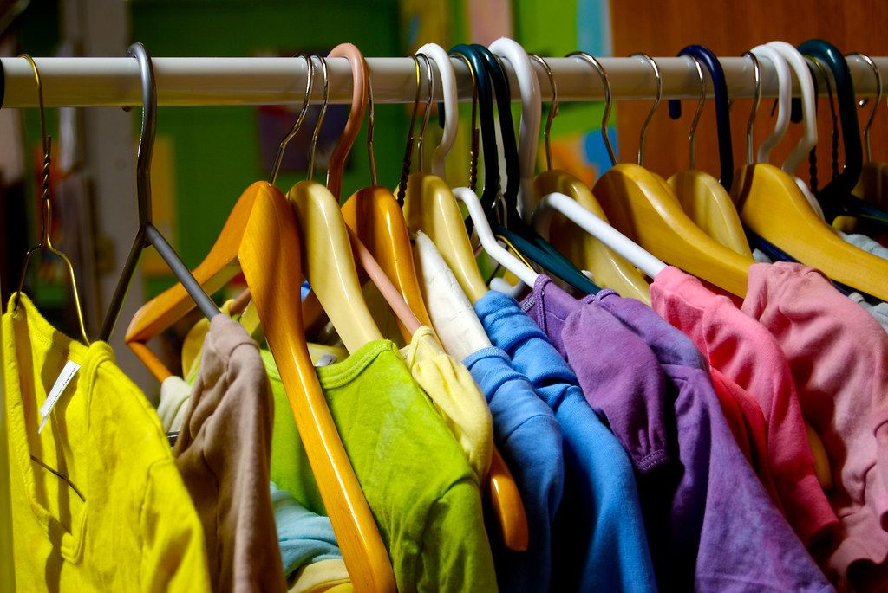

Takım
Arnavutköy · Merkez Mahallesi, Adaş Sokak
Gerçek Kuru Temizleme
Takım elbiseden şişme monta, abiyeden tül perdeye: kuru temizleme, yıkama ve ütü için parçalarınızı getirin, etiketine birlikte bakalım.

Rayda neler var?
Takımdan perdeye her parçanın bakımı farklıdır. Her birinin ayrıntısını ve getirirken nelere dikkat edeceğinizi Hizmetler sayfasında bulursunuz.
Kuru temizleme
Suyla yıkanınca çekebilen ya da biçimi bozulabilen giysiler için çözücüyle temizlik.
Takım ve ceket
Ceket, pantolon, yelek; astarlı ve telalı parçalar.
Mont ve kaban
Şişme mont, yün kaban, palto ve trençkot.
Abiye ve gelinlik
Taşlı, tüllü, ipek ve işlemeli özel gün parçaları.
Yıkama ve ütü
Gömlek, bluz, elbise ve günlük giysiler.
Perde
Tül ve fon perdeler; panel panel.
Etiketteki küçük işaretler ne diyor?
Giysinizin içindeki bakım etiketinde beş temel şekil vardır: leğen, üçgen, kare, ütü ve daire. Aşağıdaki sık görülen sembollerden birine dokunun, anlamı etikette belirsin.
- 30 °C, çok hassas programYıkama
Su en fazla 30 °C. Alttaki çift çizgi çok hassas işlem demektir; yünlü programına karşılık gelir.
Sıkma devrini düşürün, parçayı burarak sıkmayın.
- Yalnız elde yıkamaYıkama
Makinede yıkanmaz; elde yıkanır, su en fazla 40 °C.
Ovalamadan, hafifçe bastırarak yıkayın; burarak sıkmayın.
- Ağartıcı kullanılmazAğartma
Hiçbir ağartıcı kullanılmaz.
Birçok leke çıkarıcı ağartıcı içerir; kullanmadan önce içeriğine bakın.
- Tamburda düşük ısıKurutma
Kurutma makinesinde yalnız düşük ısı (çıkış havası en fazla 60 °C).
Makinenin hassas ya da düşük ısı seçeneğini kullanın.
- Serip kurutmaKurutma
Düz bir yüzeye serip kurutun.
Yün ve örgü kazaklarda sarkmayı önler.
- Orta ısıda ütüÜtü
Ütü tabanı en fazla 150 °C.
Ütü kadranında genellikle yün, ipek ve polyester ayarına karşılık gelir.
- Düşük ısıda ütüÜtü
Ütü tabanı en fazla 110 °C. Buhar kalıcı hasar verebilir.
Akrilik, poliamid (naylon) ve asetat gibi kumaşlarda görülür; buharı kapatın.
- P: kuru temizlemeProfesyonel bakım
Profesyonel kuru temizleme; perkloretilen (tetrakloroetilen) ve F harfindeki tüm çözücülerle, normal işlem.
Evde yıkamayı denemeyin; kuru temizlemeye verin.
- F: hidrokarbonla kuru temizlemeProfesyonel bakım
Profesyonel kuru temizleme yalnız hidrokarbon çözücülerle, normal işlem.
Bu parça için perkloretilen uygun değildir; etiketi mutlaka gösterin.
- Kuru temizleme yapılmazProfesyonel bakım
Kuru temizleme çözücüleri bu ürüne zarar verebilir.
Çoğunlukla ev tipi yıkama sembolleriyle birlikte görülür.
Bir sembole dokunun
Anlamı burada görünür
Sembollerden birini seçin. Anlamını ve ne yapmanız gerektiğini bu etikette okuyun.
Tüm sembolleri Etiket rehberinde görünGetirmeden önce beş dakika
Kuru temizlemeye giden bir parçanın en iyi sonucu alması çoğu zaman evde başlar. Listeyi işaretleyerek ilerleyebilirsiniz.
Parçalarınızı sayın, mesajınız hazır
Talep sayfasında kaç takım, kaç gömlek, kaç perde getireceğinizi seçin; her parça rayınıza asılsın. Sonra hazırlanan mesajı tek dokunuşla WhatsApp'tan gönderin.
- 1
Parçaları seçin
Takım, mont, abiye, perde… Artı ve eksi düğmeleriyle sayıyı girin.
- 2
Ayrıntıyı ekleyin
İstediğiniz işlemi, leke durumunu ve ne zaman uğrayacağınızı işaretleyin.
- 3
Mesajı gönderin
Hazır mesajı görün, WhatsApp'tan gönderin; isterseniz kopyalayıp arayın.
Merkez Mahallesi, Adaş Sokak
Merkez mah, Adaş Sk., 34275 Arnavutköy/İstanbulHer gün 24 saat açık.
Çalışma saati bilgisi Google İşletme profilinde her gün 24 saat açık olarak görünüyor. Gece geç saatte uğrayacaksanız önce bir telefonla teyit etmenizi öneririz.